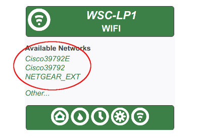
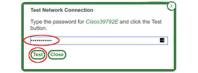
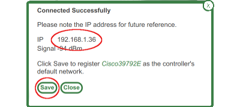
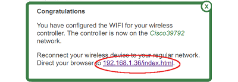

Your WSC-LP1 has to be powered before we can configure the radio. The most convenient method is to power the unit with a 9V battery. This way you can work nearby your WIFI router where you know the signals will be good.
Or you can power the unit with a 24VAC wall transformer. In that case you'll have to work close to the wall transformer.
Using the WIFI functions on your wireless device, scan for a network named "WSC-LP1". Select it. No password is needed. If the WSC-LP1 network does not appear, see this troubleshooting topic.
Wait for your wireless device to connect, start up a browser and go to the address "1.1.1.1".
Your WIFI network (SSID) should appear in a list of available networks. If so, select it by clicking the name.
If your network name does not appear then click "Other...."
Enter your network name (if requested) and password. Press the "Test" button. If the test fails you can retry, re-enter your password or cancel. Give it a few tries before giving up.
If the test succeeds, you're good to go. Note the IP address assigned to the WSC-LP1 by your WIFI router. You may need this in the future. Then press the "Save" button.
You've done the hardest step setting up your WSC-LP1, by far. After saving your network credentials, the WSC-LP1 restarts and connects to your WIFI network.
Note the URL on the last page. This is the controller's home page. Save it, keep it, write it down if you have to.
You can now access the WSC-LP1 controller from any device connected to your LAN, whether wired or wireless. Simply start a browser and go to the home page URL.
Be aware, the wireless device we just used to configure the WSC-LP1 may not be connected to your LAN. Wait for it to reconnect to your LAN, or manually force it to reconnect, before trying the home page URL.